地政学
太平洋とカリブ海をつなぐ運河の入口にあり、米国、ラテンアメリカ、アジア航路の利害が重なります。首都は外交、通商、港湾管理、治安政策の舞台です。水と船の動きが国家主権を日々可視化します。外交も絡みます。
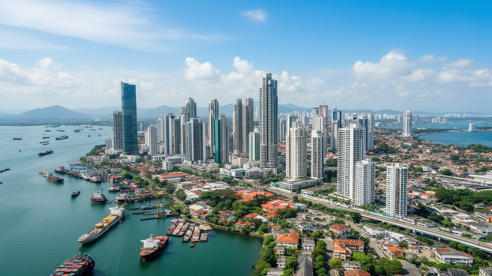
🇵🇦 パナマ / 中米 / World City Atlas
運河、金融、港湾、旧市街、移民労働、水資源、格差が太平洋岸に重なる中米の結節都市です。世界の船を通す入口であり、住民の生活と国家の記憶が近距離でぶつかる首都です。
都市の骨格
パナマシティは太平洋岸の湾、旧市街、金融街、港湾、運河入口を短い距離で結びます。国土を横断する水路は、都市の富だけでなく、水管理、移民、労働、外交の課題も集めています。
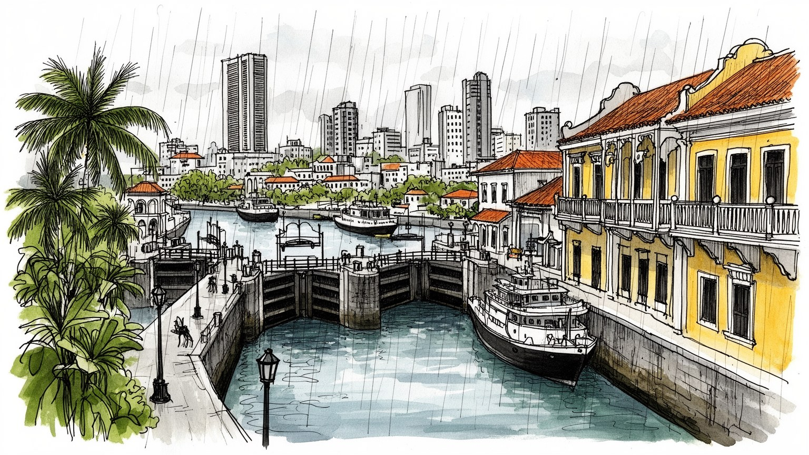
太平洋とカリブ海をつなぐ運河の入口にあり、米国、ラテンアメリカ、アジア航路の利害が重なります。首都は外交、通商、港湾管理、治安政策の舞台です。水と船の動きが国家主権を日々可視化します。外交も絡みます。
運河、港湾、銀行、保険、不動産、観光、行政が経済を支えます。同時に建設、清掃、警備、飲食、物流、家事労働に多くの移民と地方出身者が入ります。高層街は住まいと通勤を問い直します。賃金差も大きな論点です。
カトリックの儀礼を軸に、アフロカリブ系、先住民、ユダヤ系、中国系、レバノン系、近年の南米系移民の食と言語が重なります。旧市街の広場や市場は、植民地の記憶と現代の混交を見せます。音楽と食も境界をほどきます。
観光客は運河閘門、旧市街、湾岸遊歩道、博物館を巡りますが、住民の日常は湿暑、渋滞、家賃、水道、治安、通勤に左右されます。景色の近さの裏で所得差と公共サービス差が現れます。旅の動線にも生活が重なります。
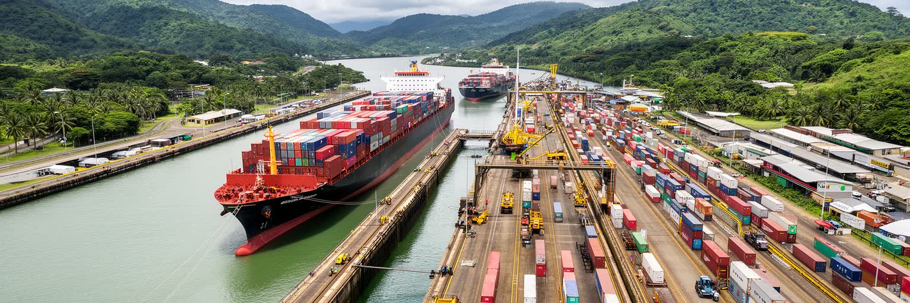
パナマシティを理解する第一の軸は、太平洋側の湾と運河入口です。船は市街地のすぐ背後で大陸を越え、世界のコンテナ、穀物、エネルギー、工業製品を短い時間で大西洋側へ送ります。この地理は都市へ富をもたらす一方、国家主権、米国との歴史、中国を含むアジア航路、港湾競争、気候変動による水不足を同時に呼び込みます。運河は観光名所である前に、国際政治の装置です。通航料、拡張工事、水資源、労働安全、保安体制は、首都のニュースと家計にも影響します。乾季が長引けば通航制限が議論され、遠い海運会社の判断が市内の雇用や物価に波及します。運河のそばに首都があることで、パナマシティは中米の一都市ではなく、世界貿易の速度と脆さを毎日見せる場所になります。湾岸の高層ビルから見える船影は、グローバル化の抽象的な記号ではありません。水位、湖、雨、港湾労働、外交交渉に支えられた具体的な都市の条件です。さらに運河の管理は、国内政治の信頼にも直結します。通航収入を教育、医療、住宅、地方投資へどう分配するかは、首都だけでなく全国の不満と期待を集めます。水路を持つ都市の力は、船を速く通す技術だけでなく、その利益を公共性へ変える制度で測られます。だから運河沿いの風景には、橋や閘門の迫力だけでなく、国家財政と住民生活の距離まで映ります。
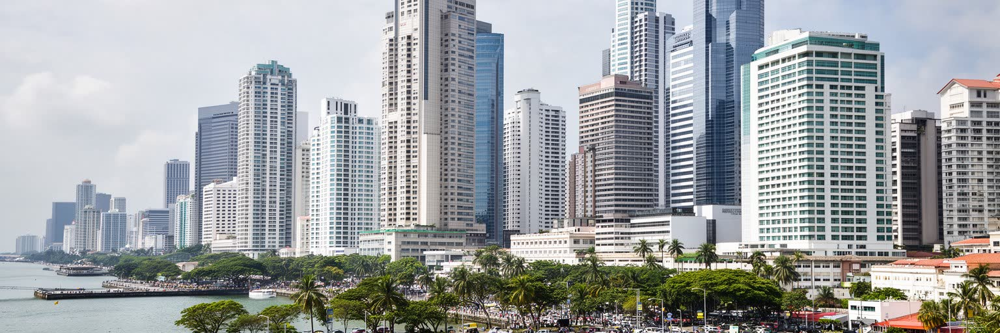
パナマシティの高層街は、運河収入だけでなく銀行、保険、法律、会計、船舶関連サービス、不動産、地域本部機能の集積で形作られています。米ドルを使う経済、国際金融センターとしての制度、港湾と空港の接続は、周辺国から資本と人材を引き寄せます。湾岸のオフィスや住宅塔は都市の成功を見せますが、同時に投資用住宅、空室、地価上昇、家賃負担も生みます。金融は雇用を作る一方、専門職に機会が偏り、サービス現場の賃金や住環境との距離を広げます。銀行街の清潔なロビー、警備員、配達員、清掃員、昼食を売る小さな店まで含めて、金融都市は動いています。数字上の成長を読むだけでは、どの労働が見えやすく、どの労働が隠れるかを捉えられません。パナマシティのサービス経済は、自由で開かれた市場の顔と、規制、透明性、格差、生活費の問題を同時に抱えます。海に面したビル群は、世界と接続する都市の力であると同時に、住民がその力をどれだけ共有できるかを問う鏡でもあります。金融センターとしての信用は、情報公開、税務、汚職対策、国際基準への対応に左右されます。都市の評判が揺れれば投資だけでなく雇用も揺れるため、制度の透明性は生活の安定と結びつきます。湾岸の資本が地域の学校、交通、公共空間へ戻る仕組みを持てるかが、金融都市の成熟度を決めます。
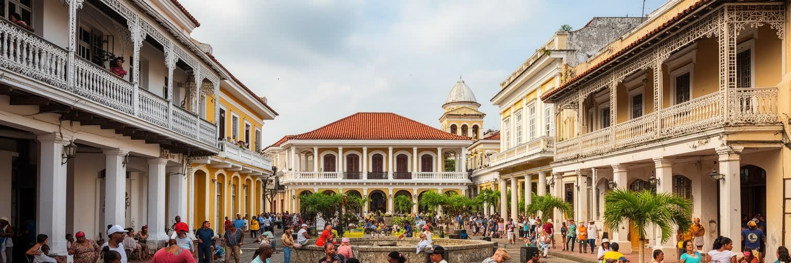
カスコ・ビエホは、植民地都市、教会、広場、海を望む城壁、共和国の記憶が重なる地区です。石畳の道や修復された建物は観光客にとって美しい入口ですが、その美しさは単純な保存ではありません。長く住んできた世帯、老朽住宅、家賃上昇、ホテルや飲食店への転換、文化施設の整備がせめぎ合います。世界遺産として評価されるほど、地区は国際的な消費の舞台になり、住民の生活空間は変わります。教会の鐘、バルコニー、広場の祭り、路地の店は、スペイン植民地、アフロカリブ系の労働、移民商人、近代国家の建設を記憶しています。遺産を読むには、建物の年代だけでなく、誰が修復費を出し、誰が残れず、どの記憶が観光用に整えられるかを見る必要があります。カスコ・ビエホは過去の展示室ではなく、現在も住まい、商売、祈り、夜の娯楽、公共空間をめぐる交渉が続く場所です。湾岸の新市街と向かい合う旧市街の姿は、パナマシティが古い港町と金融首都を同時に生きていることを示します。近くには破壊された旧パナマの遺跡もあり、海賊襲撃、再建、独立、運河時代の記憶が都市の時間を厚くします。観光の写真に収まらない生活史まで見ることで、遺産は商品ではなく公共の記憶になります。広場に残る日常の会話や学校帰りの人影は、保存地区が今も生活の場所であることを教えます。
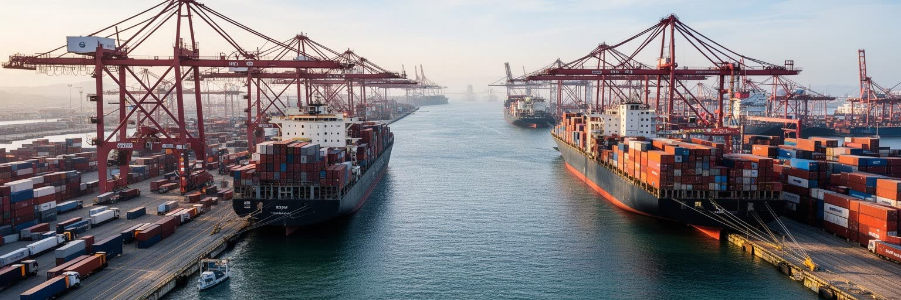
パナマシティの物流機能は、運河の閘門だけで完結しません。太平洋側の港、カリブ海側の港湾群、トクメン国際空港、保税倉庫、幹線道路、都市内配送が一つの経済圏を作ります。船で着いた貨物は、倉庫、通関、トラック、航空便、地域市場へ移り、都市の周辺に見えにくい労働を広げます。物流は効率を追う産業ですが、住民には渋滞、騒音、道路事故、排気、土地利用の変化として現れます。郊外の倉庫地や港湾道路は観光地ほど目立ちませんが、都市の食料、建材、医薬品、日用品を支える場所です。港湾労働者、ドライバー、通関業者、整備士、警備員、事務員がいなければ、運河都市の機能は止まります。世界貿易の玄関であることは、速い流通を可能にするだけでなく、労働時間、交通安全、港湾保安、災害時の代替路を考える責任を持つことです。パナマシティの地図を読むとき、湾岸の摩天楼だけを中心に置くと都市の半分を見落とします。コンテナの動く道、空港へ向かう道路、倉庫の立地が、実際の都市圏を広げています。物流の競争力は、港のクレーン数や通関速度だけでは決まりません。労働者が安全に働けるか、道路が住宅地を分断しないか、災害時に物資を止めないかも、都市の信頼を支える条件です。港湾と住宅の境界をどう調整するかは、成長する首都圏の暮らしやすさを左右します。
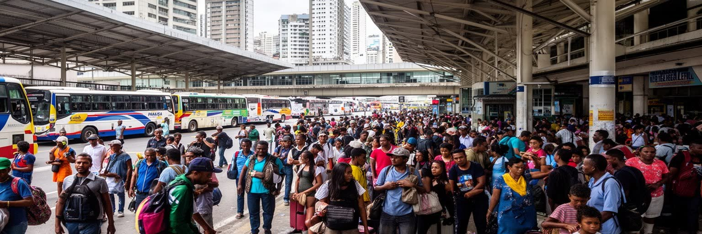
パナマシティは、地域の移動を受け止める都市でもあります。地方からの国内移住、コロンビア、ベネズエラ、カリブ海諸国、中国系、中東系、近年の南米からの移動が、商店、建設現場、飲食、家事労働、医療、教育、金融の周辺業務に入ります。ダリエン地峡を越える移民のニュースは国境の危機として語られがちですが、首都では手続き、支援団体、送金、住まい探し、非正規労働の問題として続きます。移民は都市の多様性を豊かにする一方、在留資格、言語、雇用契約、差別、治安不安の語られ方に左右されます。市場や食堂では、出身地の味が商売になり、教会やコミュニティ組織が孤立を防ぎます。しかし、都市が安い労働を必要としながら、働く人に安定した住まいと権利を用意しなければ、繁栄は不公平になります。パナマシティの移民を読むことは、通過する人と定着する人を分けず、都市がどのように人の移動で成り立っているかを見ることです。運河都市の開放性は、港や空港だけでなく、隣人として来た人をどう扱うかで測られます。送金、共同住宅、宗教施設、子どもの学校、病院の窓口は、移民が都市へ入る実際の入口です。そこで言語支援や法的保護が弱ければ、労働市場の底に不安が残り、都市の多様性も脆くなります。移動する人を一時的な労働力ではなく住民として扱えるかが、首都の包摂力を試します。
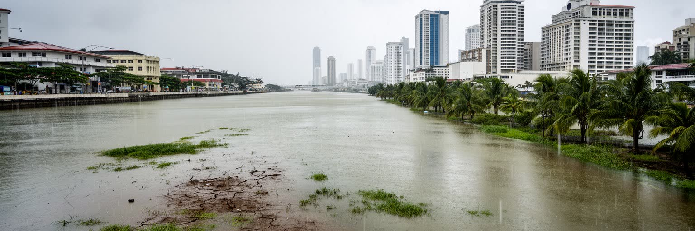
パナマシティの気候は熱帯海洋性で、雨季と乾季の差が都市のリズムを決めます。湿度の高い暑さは通勤、屋外労働、学校、観光、住宅の快適性に影響し、強い雨は排水、斜面、道路、低地の生活を試します。運河に必要な水はガトゥン湖などの流域に依存し、飲料水、発電、通航、環境保全の間で配分されます。乾季の降雨不足やエルニーニョの影響が強まると、通航制限だけでなく、首都の水道、物価、雇用にも不安が広がります。湾岸の高層街は空調とインフラで暑さをしのげますが、低所得地区や斜面の住宅では浸水、断水、熱、蚊の発生が重なります。気候変動は抽象的な将来予測ではなく、すでにある格差を増幅する条件です。水を多く使う世界貿易の装置と、住民の日常水を同じ都市が抱えるため、パナマシティの環境政策は国際物流政策でもあります。雨を集め、洪水を逃がし、飲み水を守り、船を通すことは別々の課題ではありません。都市の将来は、運河を動かす水と生活を守る水を同時に管理できるかにかかっています。緑地、流域保全、漏水対策、排水路の維持は地味ですが、運河と家庭の蛇口をつなぐ重要な政策です。水の豊かな熱帯都市に見えるからこそ、不足した時の影響は大きくなります。暑さを避ける日陰や涼しい公共施設も、気候適応の身近なインフラになります。日陰も命を守ります。
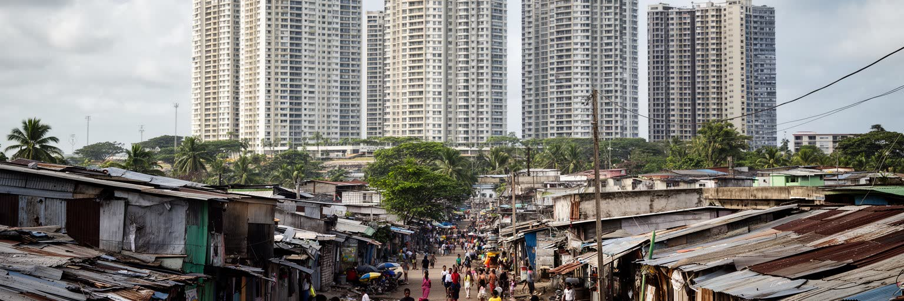
パナマシティの都市景観は、湾岸の高層住宅と金融街、旧市街の修復地区、丘陵や郊外の住宅地、インフォーマルな住まいを近距離で並べます。成長は雇用と公共投資を生みますが、土地価格、家賃、交通費を押し上げ、中心部に住める人を限ります。低所得世帯は郊外や斜面へ広がり、長い通勤、道路混雑、保育、学校、医療へのアクセスに時間を失います。都市の不平等は所得だけでなく、雨に強い家か、涼める部屋か、安全に歩ける道か、近くに水道や診療所があるかで表れます。再開発は古い建物を直し、観光と投資を呼びますが、住民の退去や地域商店の変化も起こします。高層ビルの夜景は都市の成功を象徴しますが、その窓を掃除し、建て、警備し、料理を運ぶ人の暮らしが都市の足元です。パナマシティを読むには、海沿いの富と周縁の住まいを別々に見ないことが重要です。交通、住宅政策、公共空間、治安、水道を一体で考えなければ、成長の利益は一部の地区に集中します。首都の価値は、世界へ開く速さだけでなく、住民が近くで生活を続けられるかでも決まります。学校区、保育、警察への信頼、女性の夜間移動、災害時の避難路も住まいの質を左右します。住宅は個人の資産である前に、都市に参加するための基盤です。高層街と周縁を結ぶ政策が弱ければ、都市の近さは見た目だけの近さになります。
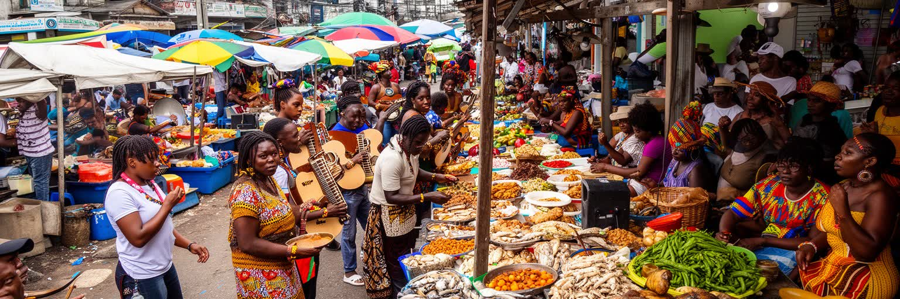
パナマシティの文化は、スペイン語圏の首都という一語では収まりません。カトリックの祝祭や教会を軸に、アフロカリブ系の音楽と食、先住民コミュニティの工芸、中国系商店、ユダヤ系やレバノン系の商業、近年の南米系移民の料理が日常の風景に入ります。市場では魚、米、豆、プランテン、香辛料、果物が並び、昼食の小さな食堂が働く人の時間を支えます。観光客向けのレストランや旧市街のバーだけでなく、学校帰りの屋台、家族の週末、教会行事、サルサやレゲエの音が都市の文化を作ります。多文化性は華やかな消費だけではなく、言語、肌の色、出身地、階層をめぐる緊張も含みます。運河建設や鉄道、港湾労働で来た人びとの記憶は、食、姓、宗教施設、音楽、地区名に残ります。文化を読むには、名所の美しさと同じくらい、誰が台所に立ち、誰が祭りを準備し、誰の歴史が学校や博物館で語られるかを見る必要があります。パナマシティの食卓は、交易都市の開放性と労働移動の歴史を静かに映しています。宗教施設や地域団体は、冠婚葬祭だけでなく、移民の相談、子どもの教育、食料支援にも関わります。文化は週末の娯楽ではなく、都市で互いを支える生活の仕組みでもあります。味や音楽を入口にすると、港湾労働と移民家族の歴史も身近に見えてきます。屋台の味も街の記憶を伝えます。
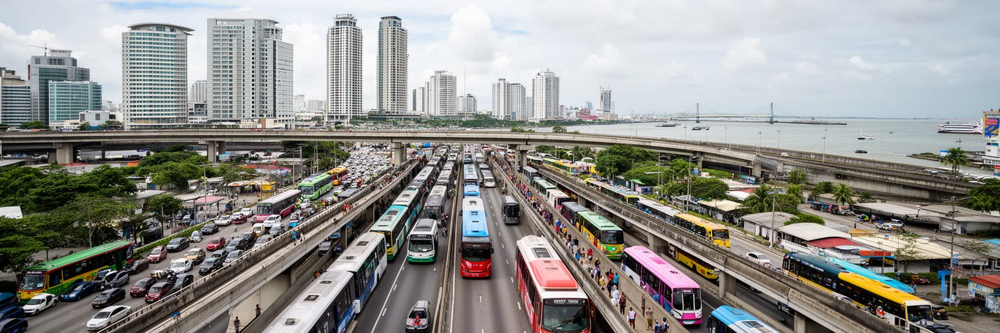
パナマシティの日常は、海沿いの眺めだけではなく、渋滞、地下鉄、バス、タクシー、徒歩の難しさに支えられています。都市圏は湾岸から内陸、東西の郊外へ伸び、仕事場と住まいの距離が広がりました。地下鉄は中米で先駆的な大量輸送として通勤を変えましたが、駅までの歩道、バス接続、治安、暑さ、雨、運賃の負担は地区ごとに違います。道路中心の成長は車を持つ世帯に便利さを与える一方、車を持たない人には長い待ち時間と乗り換えを残します。学校、病院、市場、職場、役所へ行く時間は、生活の自由を測る物差しです。観光客が短い滞在で移動しやすい場所と、住民が毎日通うルートは重なりません。歩道が途切れ、日陰が少なく、雨で水がたまる道では、高齢者、子ども、障害者、ベビーカーを使う家庭が都市から遠ざけられます。交通政策は単なるインフラ整備ではなく、誰が雇用に近づけるか、誰が家族の世話と仕事を両立できるかを決めます。パナマシティの成長を持続させるには、港や空港の速さだけでなく、住民の毎日の移動を軽くする設計が必要です。公共交通が住宅政策と連動すれば、郊外に住む人の時間を取り戻せます。駅前の歩行空間、日陰、照明、乗り継ぎ案内は小さく見えて、都市への参加を広げる設備です。移動の質は、首都の成長を誰が実際に使えるかを示す最も日常的な指標です。
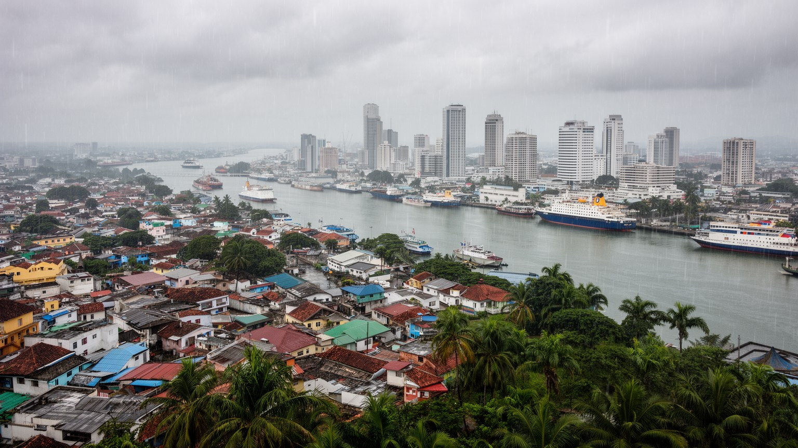
パナマシティは、運河の地政学、金融の制度、港湾と空港の物流、旧市街の遺産、移民の労働、水資源の管理、都市格差を一つの地図で読める首都です。世界の船を通す都市であることは、開放性と豊かさを意味しますが、同時に水、主権、透明性、労働条件、住宅、交通をめぐる責任も重くします。湾岸の高層街だけを見れば、都市は成功した国際金融センターに見えます。旧市街だけを見れば、歴史と観光の都市に見えます。運河だけを見れば、世界貿易の装置に見えます。しかし、実際のパナマシティはそれらが互いに依存し、時に矛盾する場所です。港で働く人、銀行で働く人、郊外から通う人、旧市街で店を守る人、移民として新しい生活を探す人、水不足を心配する人が同じ都市を作っています。この首都を読むとは、世界を結ぶ速さと、住民が日々暮らす遅さを同時に見ることです。パナマシティの重要性は、運河の通航量や金融の数字だけでなく、グローバルな機能を生活の公平さへどう結びつけるかにあります。観光客にとっては運河、旧市街、湾岸遊歩道、博物館が入口になりますが、その動線の外側にある労働、移民、水、住まいを見たとき、都市の輪郭はより正確になります。通過点ではなく生活の首都として見ることが、この街を読む出発点です。世界を結ぶ水路のそばで、地域の暮らしを守れるか。その問いがパナマシティの核心です。